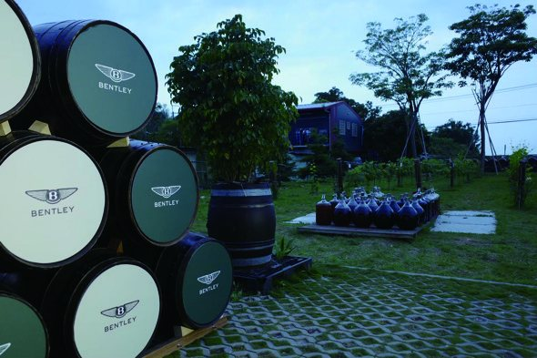
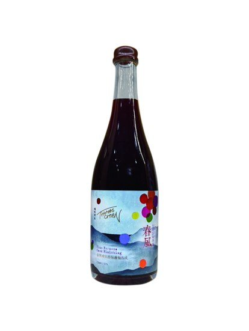

WINERY TOUR
酒莊導覽
走進酒莊空間，了解釀造流程、設備與職人故事。
神跡酒造不只著眼於釀造，更希望透過台灣在地農作、風土氣候與職人技藝，重新建立屬於台灣自己的風土文化。
從黑后葡萄、金香葡萄、酒米、番薯及黑糖，到自然發酵、重力引流與熟成技術，每一道工序，都是對土地與時間的尊重。
神跡酒造以四層樓高的空間設計，讓酒液自然流動，減少機械泵浦介入。
葡萄經篩選與除梗後，藉由重力進入下方發酵槽；發酵、壓榨、沉澱、熟成，再一路流向裝瓶區。以空間高低差串起每一個釀造階段。
這樣的流程有助於減少氧化與污染，保留原料自然的香氣與風味。
篩選、除梗，讓葡萄自然落入下一層。
進行發酵與壓榨，酒液流入沉澱槽。
沉澱澄清後，進入橡木桶熟成。
熟成後進行澄清、裝瓶與貼標。
從建築、酒窖到周圍田園景色，感受土地與釀造工藝交會的空間。




在青山綠野環繞的環境中，認識台灣在地釀造文化。手冊載明酒莊小旅行以 8 人以上成團。
走進酒莊空間，了解釀造流程、設備與職人故事。
從台灣在地農作出發，探索傳統與創新如何交會。

依團體需求安排參訪內容，相關時間與細節請洽酒莊。
酒莊手作體驗可依活動時間、預算與需求彈性安排。從葡萄挑選、手工榨汁，到後續由專業釀酒師接手釀造，體驗一段從原料到成品的旅程。
也可安排裝瓶、蜂蠟封蠟、紀念酒標貼標與親筆簽名等活動。
以台灣不同產區的農作物為起點，呈現多元的土地風味。以下品項與風味資訊整理自酒莊手冊。

蜂蜜、蜜餞、烏梅與太妃糖香氣。

蜂蜜、蜜餞、烏梅、黑莓乾與太妃糖風味。

番薯香氣舒展，口感綿柔飽滿。

黑糖香氣馥郁，風味醇厚圓潤。
巨峰葡萄果香濃郁，糖酸風味集中。
米香、梨香細緻，口感溫潤柔和。
本區為酒莊手冊內容展示，非線上販售頁面。酒類資訊僅供成年人依法查閱。
如有參訪、團體活動、手作體驗或場地需求，請直接聯繫酒莊確認最新安排。